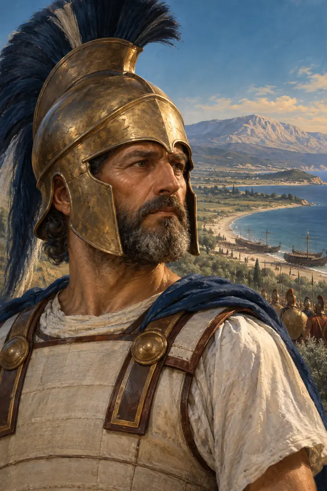
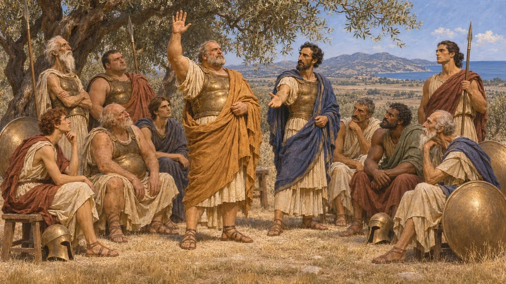
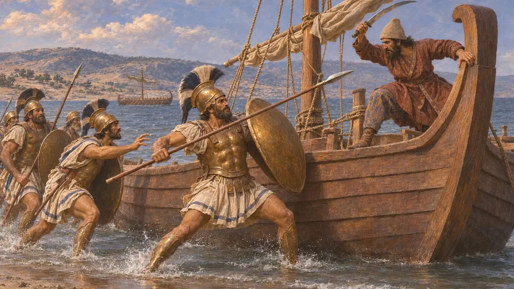
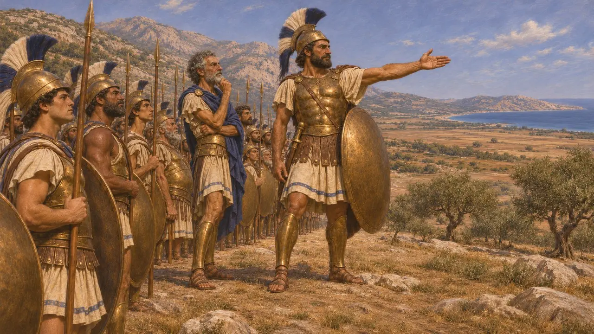
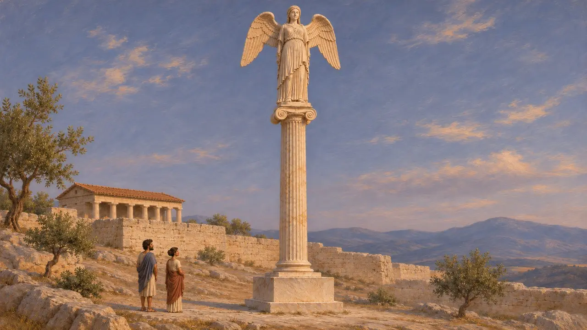
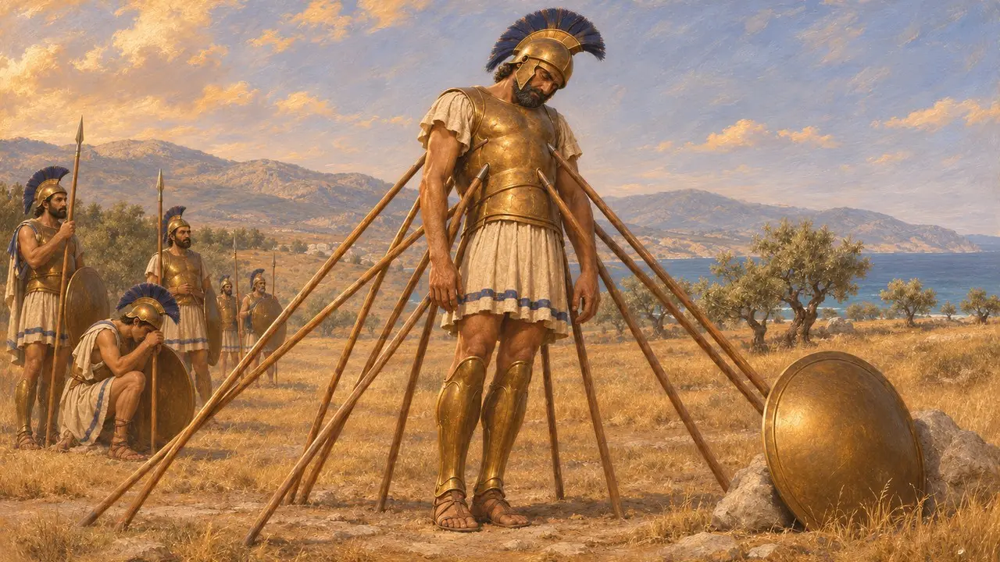

아피드나의 칼리마코스는 마라톤 전투가 벌어진 해에 아테네의 전쟁 아르콘인 폴레마르코스였다. 헤로도토스에 따르면 열 명의 장군이 페르시아 상륙군과 싸울지를 두고 의견이 갈렸을 때, 그의 한 표로 싸우기로 결정되었다. 그는 아테네군 우익을 이끌었고 페르시아 함선 곁에서 싸우다 전사했다.
게임에서: 게임의 연대기는 헤로도토스를 따릅니다. 결정적인 한 표, 우익 지휘, 함선 곁에서의 죽음입니다. 그의 역할을 확정된 것으로 다루지만, 총지휘권을 밀티아데스가 아닌 그가 쥐었는지는 역사가들 사이에서 여전히 논쟁 중입니다.

열한 번째 표
고대의 전승헤로도토스에 따르면 마라톤의 아테네 장군 열 명은 의견이 반반으로 갈렸고, 일부는 다티스와 아르타프레네스가 이끄는 더 큰 페르시아군과 맞붙기를 두려워했다. 밀티아데스는 폴레마르코스로서 장군들과 동등한 표를 가진 칼리마코스를 찾아가, 아테네의 자유를 위해 전투를 택하라고 설득했다. 칼리마코스는 싸우는 쪽에 표를 던졌다. 헤로도토스는 그가 추첨으로 뽑힌 인물이었다고 덧붙인다.
Herodotus 6.109-110

우익과 함선 곁에서
고대의 전승헤로도토스에 따르면 아테네의 관습상 폴레마르코스가 우익을 지휘했으므로, 칼리마코스는 전열의 우익에 섰다. 아테네인은 페르시아군의 양익을, 이어 중앙을 무너뜨린 뒤 달아나는 적을 해안까지 추격하며 함선을 빼앗으려 했다. 칼리마코스는 그곳에서 용감히 싸우다 장군 스테실라오스와 함께 전사했고, 키네게이로스는 함선의 고물을 붙잡다가 손을 잃었다.
Herodotus 6.111-114

마라톤의 지휘관은 누구였나
분쟁 중헤로도토스는 밀티아데스를 실질적인 지도자로 내세우고, 칼리마코스에게는 표 한 장을 던지는 역할만 맡긴다. 아리스토텔레스 학파의 『아테네인의 국제』는 당시 폴레마르코스가 전군을 지휘했으며, 아르콘이 추첨으로 뽑히게 된 것은 기원전 487년부터라고 전한다. 그래서 많은 역사가는 칼리마코스가 선출되어 공식 지휘권을 쥐고 있었으며, 헤로도토스의 이야기는 밀티아데스와 그 가문을 기리는 후대의 찬사에 영향을 받았다고 본다.
Aristotle, Athenaion Politeia 22.2, 22.5

아크로폴리스의 기둥
당대 기록날개 달린 형상을 얹은 높은 대리석 기둥의 조각들이 남아 있는데, 이 기둥은 아피드나의 칼리마코스를 폴레마르코스로 명시한 명문과 함께 아크로폴리스에 봉헌되었다. 명문은 깨져 있고 복원안을 두고 논란이 있으나, 아마도 마라톤 이후 서원을 이행한 일을 기록한 것이며, 그의 사후에 세워졌을 것이다. 이 기념물은 아마 기원전 480년 페르시아인들이 아크로폴리스를 약탈했을 때 파괴되었을 것이다.
IG I³ 784

쓰러지지 않은 망자
후대의 전설전투 후 수십 년 뒤에 그려진 채색 주랑(스토아 포이킬레)의 마라톤 그림에는 칼리마코스가 밀티아데스 곁에 그려져 있었으며, 수백 년 뒤 파우사니아스가 이를 직접 보고 기록했다. 라오디케이아의 연설가 폴레몬을 비롯한 로마 시대 작가들은 훨씬 더 나아가, 그의 몸에 창이 너무 많이 꽂혀 죽은 뒤에도 쓰러지지 않고 서 있었다고 전한다. 이 장면은 헤로도토스가 아니라 후대 수사학의 산물이다.
Pausanias 1.15.3; Polemon of Laodicea, Declamations
출처
- Herodotus 6.109-114
- Aristotle, Athenaion Politeia 22
- IG I³ 784
- Pausanias 1.15.3
- Polemon of Laodicea, Declamations
- P. Krentz, The Battle of Marathon, 2010